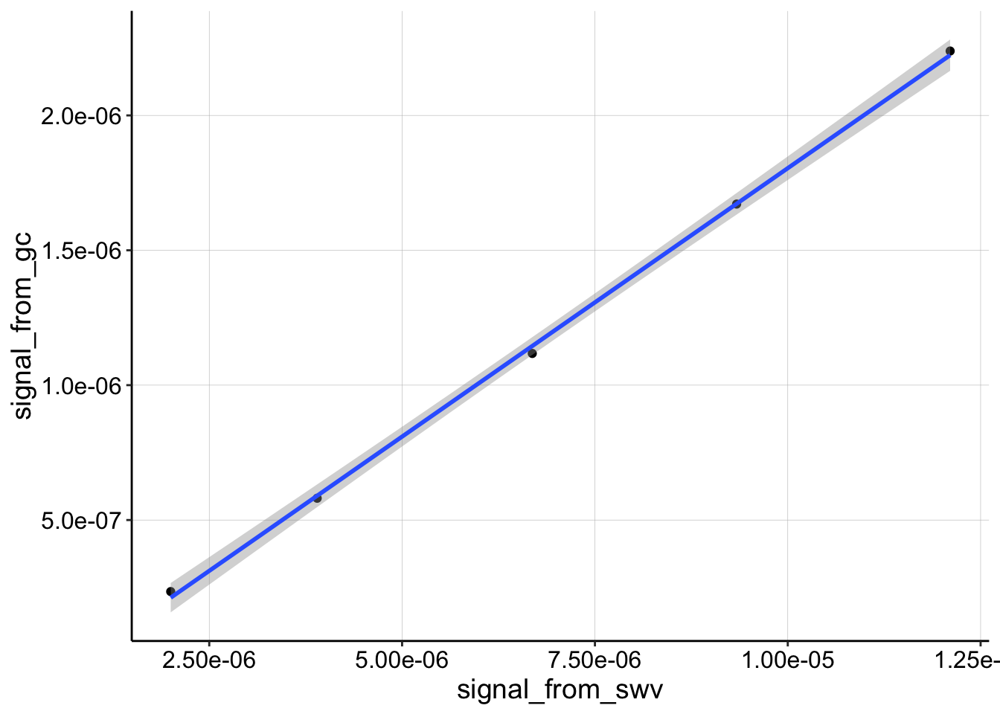
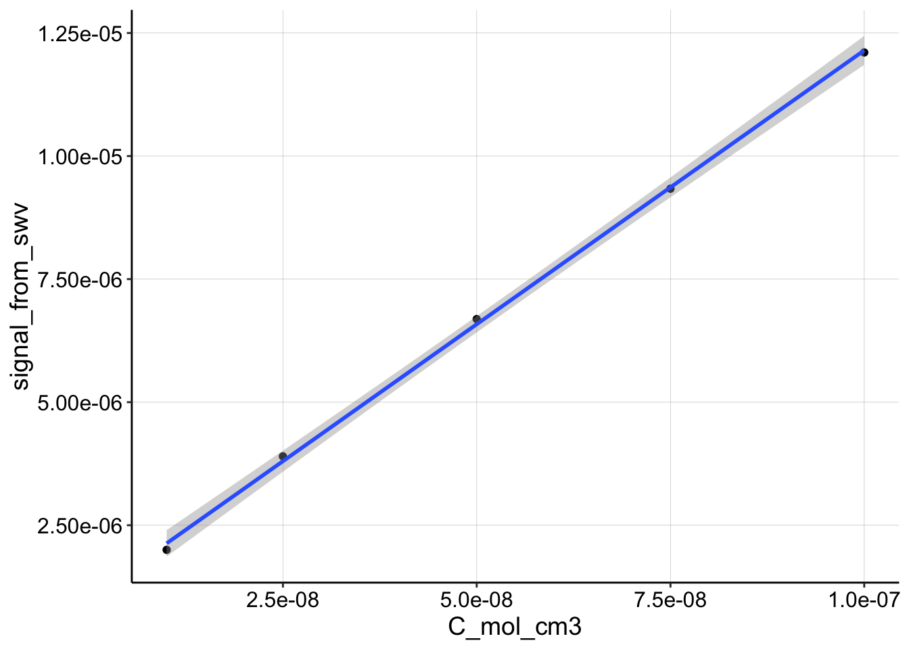
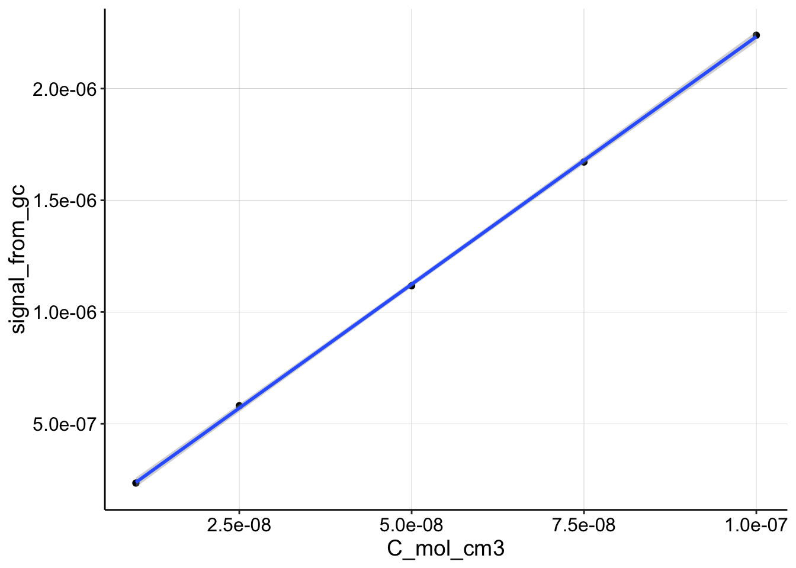
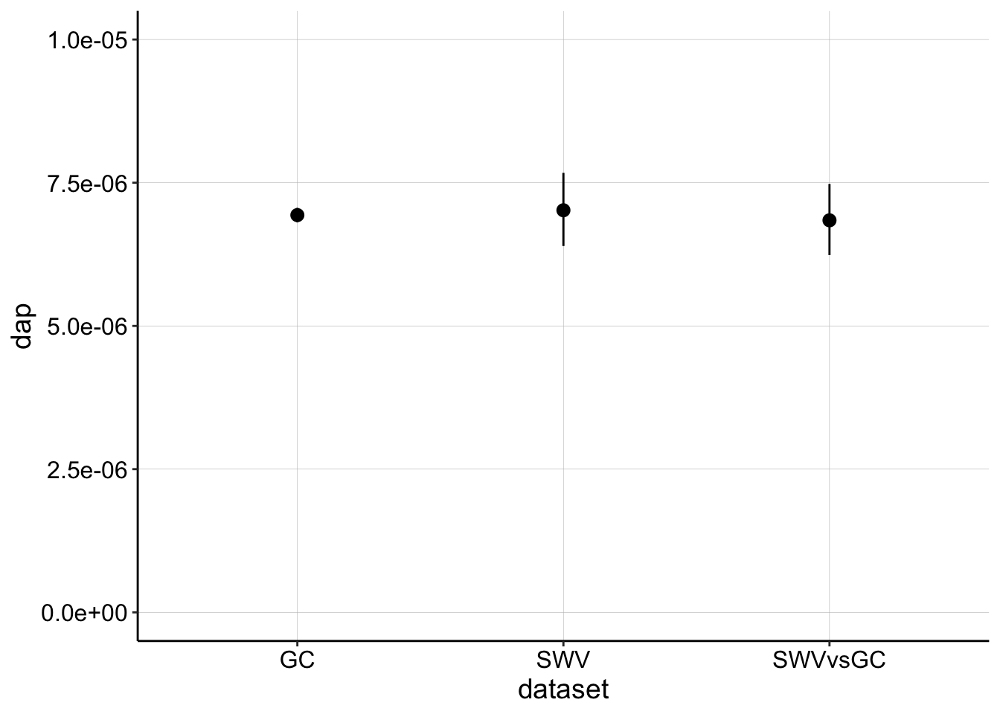
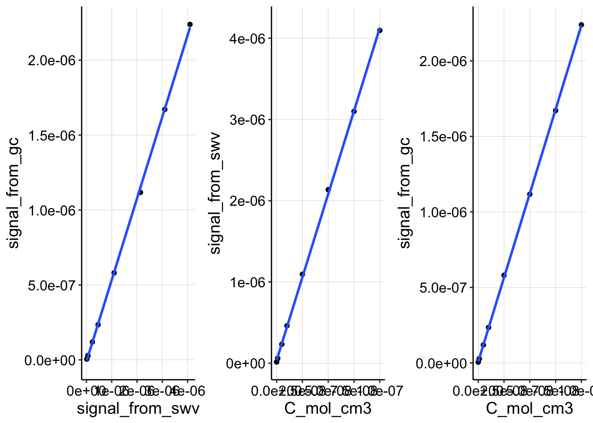

library(tidyverse)
library(cowplot)
library(broom)
library(modelr)
library(viridis)
library(lubridate)
library(hms)
library(knitr)
library(kableExtra)
library(patchwork)
knitr::opts_chunk$set(tidy.opts=list(width.cutoff=60),tidy=TRUE, echo = TRUE, message=FALSE, warning=FALSE, fig.align="center")
source("../../../IDA/tools/echem_processing_tools.R")
source("../../../IDA/tools/plotting_tools.R")
theme_set(theme_1())Let’s try to settle on an estimate for \(n\) and \(\psi\) and by looking for consistent \(D_{ap}\) estimates from the SWV and GC blank datasets with known concentrations. We can extract a \(D_{ap}\) by comparing \(I_{GC}\) to \(I_{SWV}\), but because we know the bulk concentration for this in vitro system we can also estimate \(D_{ap}\) by comparing \(I_{GC}\) to \(C\), or \(I_{SWV}\) to \(C\).
Let’s first read in the processed fast dataset.
df_blank <- read_csv("../data/11_28_18_swvFast_gc_soak_processed.csv")We’ll select just the subset from SWV electrode 1 and GC electrode 2 (collector). Let’s also transform the added PYO from \(\mu M\) to \(\frac{mol}{cm^3}\).
df_cal <- df_blank %>% filter(electrode_from_swv == "i1" & electrode_from_gc ==
"i2") %>% mutate(C_mol_cm3 = PHZaddedInt * (10^-9))The data look like this:
ggplot(df_cal, aes(x = signal_from_swv, y = signal_from_gc)) +
geom_point() + geom_smooth(method = "lm")
Recall that for this type of data:
\[D_{ap} = \pi t_p \left( \frac{m A \psi}{S} \right) ^2\]
So, here’s a function that will calculate \(D_{ap}\) from the slope of this data:
dap_from_swvGC <- function(m, t_p = 1/(2 * 300)) {
psi <- 0.7
# psi <- 0.75 A <- 0.013 #cm^2
A <- 0.025 #cm^2
S <- 18.4 #cm
d_ap <- (m * A * psi)^2/(S^2 * pi * t_p)
d_ap
}And now, we’ll fit a linear model and calculate a \(D_{ap}\).
lm_swvGC <- tidy(lm(signal_from_gc ~ signal_from_swv, data = df_cal),
conf.int = T) %>% filter(term == "signal_from_swv") %>% mutate(dap = dap_from_swvGC(m = estimate)) %>%
mutate(dap_high = dap_from_swvGC(m = conf.high)) %>% mutate(dap_low = dap_from_swvGC(m = conf.low)) %>%
mutate(dataset = "SWVvsGC")
lm_swvGC %>% kable() %>% kable_styling()| term | estimate | std.error | statistic | p.value | conf.low | conf.high | dap | dap_high | dap_low | dataset |
|---|---|---|---|---|---|---|---|---|---|---|
| signal_from_swv | 0.1990355 | 0.0028369 | 70.15961 | 6.4e-06 | 0.1900072 | 0.2080638 | 6.8e-06 | 7.5e-06 | 6.2e-06 | SWVvsGC |
Ok, seems reasonable, let’s move forward and we’ll compare at the end.
Here’s the data:
ggplot(df_cal, aes(x = C_mol_cm3, y = signal_from_swv)) + geom_point() +
geom_smooth(method = "lm")
For a plot of \(I_{SWV}\) vs. \(C\), the slope can be definited in terms of the parameters for \(I_{SWV}\) other than concentration. This yields an expression for \(D_{ap}\):
\[D_{ap} = \pi t_p \left( \frac{m}{\psi n F A} \right) ^2 \] So we’ll again define the function to calculate it:
dap_from_SWV <- function(m, t_p = 1/(2 * 300)) {
n = 1.8
# n=2
psi <- 0.7
# psi <- 0.75
# A <- 0.013 #cm^2
A <- 0.025 #cm^2
F_C = 96485.332
d_ap <- pi * t_p * (m/(psi * n * F_C * A))^2
d_ap
}The linear model of this data gives the following:
lm_SWV <- tidy(lm(signal_from_swv ~ C_mol_cm3, data = df_cal),
conf.int = T) %>% filter(term == "C_mol_cm3") %>% mutate(dap = dap_from_SWV(m = estimate)) %>%
mutate(dap_high = dap_from_SWV(m = conf.high)) %>% mutate(dap_low = dap_from_SWV(m = conf.low)) %>%
mutate(dataset = "SWV")
lm_SWV %>% kable() %>% kable_styling()| term | estimate | std.error | statistic | p.value | conf.low | conf.high | dap | dap_high | dap_low | dataset |
|---|---|---|---|---|---|---|---|---|---|---|
| C_mol_cm3 | 111.2799 | 1.590469 | 69.96673 | 6.4e-06 | 106.2183 | 116.3415 | 7e-06 | 7.7e-06 | 6.4e-06 | SWV |
Also seems reasonable.
Here’s the GC vs. Concentration data:
ggplot(df_cal, aes(x = C_mol_cm3, y = signal_from_gc)) + geom_point() +
geom_smooth(method = "lm") Again, very linear.
\(I_{GC}\) is simply \(I = nFSDC\), so \(D_{ap}\) is:
\[D_{ap} = \frac{m}{n F S}\]
And here’s our function.
dap_from_GC <- function(m) {
n = 1.8
# n=2
S <- 18.4 #cm
F_C = 96485.332
d_ap <- m/(n * F_C * S)
d_ap
}The linear model:
lm_GC <- tidy(lm(signal_from_gc ~ C_mol_cm3, data = df_cal),
conf.int = T) %>% filter(term == "C_mol_cm3") %>% mutate(dap = dap_from_GC(m = estimate)) %>%
mutate(dap_high = dap_from_GC(m = conf.high)) %>% mutate(dap_low = dap_from_GC(m = conf.low)) %>%
mutate(dataset = "GC")
lm_GC %>% kable() %>% kable_styling()| term | estimate | std.error | statistic | p.value | conf.low | conf.high | dap | dap_high | dap_low | dataset |
|---|---|---|---|---|---|---|---|---|---|---|
| C_mol_cm3 | 22.16111 | 0.12625 | 175.5335 | 4e-07 | 21.75932 | 22.56289 | 6.9e-06 | 7.1e-06 | 6.8e-06 | GC |
Now let’s look at the estimates from each subset of the data:
lms <- bind_rows(lm_swvGC, lm_SWV, lm_GC) %>% select(dataset,
term, dap, dap_low, dap_high)
lms %>% kable() %>% kable_styling()| dataset | term | dap | dap_low | dap_high |
|---|---|---|---|---|
| SWVvsGC | signal_from_swv | 6.8e-06 | 6.2e-06 | 7.5e-06 |
| SWV | C_mol_cm3 | 7.0e-06 | 6.4e-06 | 7.7e-06 |
| GC | C_mol_cm3 | 6.9e-06 | 6.8e-06 | 7.1e-06 |
So, you can see that the estimates actually match very closely!!
Here it is plotted:
ggplot(lms, aes(x = dataset, y = dap)) + geom_pointrange(aes(ymin = dap_low,
ymax = dap_high)) + ylim(0, 1e-05)
So, you can see that the estimates correspond very nicely when we use these parameters. Realizing that these estimates should match led me to look for a better estimate of \(\psi\) based on our scan parameters and I found this reference, which suggested that for \(n = 2\) and \(E_{swv} = 25mV, \psi = 0.75\) and for \(n = 1.8, \psi = 0.7\). I tested both and the second parameter set yielded good results, and corresponds to the peak splitting we see in CVs (n is not quite 2). Therefore the parameters I would like to proceed with are:
Of course the first thing I did was go back to the aggregate biofilm dataset and use these parameters to recalculate the biofilm values. Interestingly, many of the values lie higher than the blank IDA estimate. I also saw that the slow SWV blank dataset gave a different value, and that confused me. So I wanted to evaluate it here.
Here I import the dataset, and calculate \(D_{ap}\) values from each subset of the data (using \(t_p = \frac{1}{30}\)). I also defined some alternative functions to play around with the parameters, you can ignore those for now. Here I am using the exact same functions from the SWV fast dataset above.
df_slow <- read_csv("../data/11_28_18_swvSlow_gc_soak_processed.csv")
df_slowCal <- df_slow %>% filter(electrode_from_swv == "i1" &
electrode_from_gc == "i2") %>% mutate(C_mol_cm3 = PHZaddedInt *
(10^-9))
dap_from_SWV2 <- function(m, t_p = 1/(2 * 300)) {
# n=1.8
n = 2
# psi <- 0.7
psi <- 0.75
# A <- 0.013 #cm^2
A <- 0.025 #cm^2
F_C = 96485.332
d_ap <- pi * t_p * (m/(psi * n * F_C * A))^2
d_ap
}
dap_from_swvGC2 <- function(m, t_p = 1/(2 * 300)) {
# psi <- 0.7
psi <- 0.75
# A <- 0.013 #cm^2
A <- 0.025 #cm^2
S <- 18.4 #cm
d_ap <- (m * A * psi)^2/(S^2 * pi * t_p)
d_ap
}
lm_swvGC_slow <- tidy(lm(signal_from_gc ~ signal_from_swv, data = df_slowCal),
conf.int = T) %>% filter(term == "signal_from_swv") %>% mutate(dap = dap_from_swvGC(m = estimate,
t_p = (1/30))) %>% mutate(dap_high = dap_from_swvGC(m = conf.high,
t_p = (1/30))) %>% mutate(dap_low = dap_from_swvGC(m = conf.low,
t_p = (1/30))) %>% mutate(dataset = "SWVvsGC")
lm_SWV_slow <- tidy(lm(signal_from_swv ~ C_mol_cm3, data = df_slowCal),
conf.int = T) %>% filter(term == "C_mol_cm3") %>% mutate(dap = dap_from_SWV(m = estimate,
t_p = (1/30))) %>% mutate(dap_high = dap_from_SWV(m = conf.high,
t_p = (1/30))) %>% mutate(dap_low = dap_from_SWV(m = conf.low,
t_p = (1/30))) %>% mutate(dataset = "SWV")
lm_GC_slow <- tidy(lm(signal_from_gc ~ C_mol_cm3, data = df_slowCal),
conf.int = T) %>% filter(term == "C_mol_cm3") %>% mutate(dap = dap_from_GC(m = estimate)) %>%
mutate(dap_high = dap_from_GC(m = conf.high)) %>% mutate(dap_low = dap_from_GC(m = conf.low)) %>%
mutate(dataset = "GC")
lms_slow <- bind_rows(lm_swvGC_slow, lm_SWV_slow, lm_GC_slow) %>%
select(dataset, term, dap, dap_low, dap_high)
lms_slow %>% kable() %>% kable_styling()| dataset | term | dap | dap_low | dap_high |
|---|---|---|---|---|
| SWVvsGC | signal_from_swv | 2.6e-06 | 2.50e-06 | 2.60e-06 |
| SWV | C_mol_cm3 | 1.9e-05 | 1.83e-05 | 1.96e-05 |
| GC | C_mol_cm3 | 7.0e-06 | 6.90e-06 | 7.00e-06 |
Ok, so obviously the GC is still the same, because we didn’t do anything different. However, The SWV and SWVvsGC estimates of \(D_{ap}\) are now wildly different!? The SWV estimate is too high and the SWV vs. GC estimate is too low. This suggests that \(n\) and \(\psi\) could be too low. I tried changing the values to 2 and 0.75, but the change was minimal. Therefore, I do not know why these estimates are so off, but I would definitely trust the SWV fast datasets more until we understand why.
With psi = 0.75 and n = 2:
With psi = 0.7 and n = 1.8:
And just for clarity, here you can see that the plots are still extremely linear.
p1 <- ggplot(df_slowCal, aes(x = signal_from_swv, y = signal_from_gc)) +
geom_point() + geom_smooth(method = "lm")
p2 <- ggplot(df_slowCal, aes(x = C_mol_cm3, y = signal_from_swv)) +
geom_point() + geom_smooth(method = "lm")
p3 <- ggplot(df_slowCal, aes(x = C_mol_cm3, y = signal_from_gc)) +
geom_point() + geom_smooth(method = "lm")
p1 | p2 | p3
I am glad that I did this, but it is also unsettling that changing the scan rate throws off the estimate drastically even with a blank electrode. For now, let’s move forward with the parameters I used in the SWV fast section above.